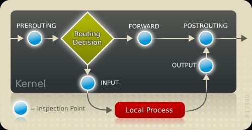
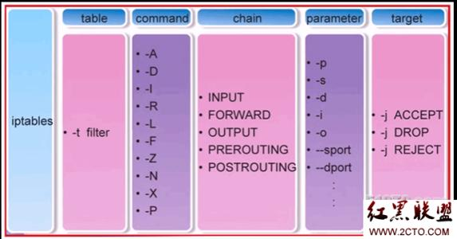

云主机设置防火墙的时候需要用到iptables命令，正好自己不是很熟悉，网上学习了一番，顺便做一个总结。
iptables是一个命令行工具，操作人员通过iptables命令将防火墙配置设定到真正的安全框架Netfilter中。Netfilter是Linux 2.4.x引入的一个子系统，Netfilter提供的是一套HOOK框架，其优势是易于扩充。
链 Chain
Netfilter在IPv4协议中定义了5个HOOK函数，这些钩子函数在数据报流过协议栈的5个关键点被调用。iptables利用这些HOOK将其对应到规则链表中，对消息数据进行规则匹配及筛选。

PREROUTING
所有发给主机的报文先被该链处理。
INPUT
目的地为本机的报文经过PREROUTING后，被该链处理。PREROUTING -> INPUT -> 应用。
通常我们设置的防火墙规则都是在这个链上。
OUTPUT
本机发出的报文先被该链处理。
FORWARD
本机转发的报文经过PREROUTING后，被该链处理。PREROUTING -> FORWARD -> POSTROUTING。
POSTROUTING
报文（本机或非本机）在离开主机之前，最后被该链处理。
表 table
将具有相同功能的规则集合叫做”表”，iptables定义了四种表，也就意味着我们定义的规则都在这四个分类中。
filter
负责过滤、防火墙功能。
nat
负责网络地址转换功能。
mangle
负责拆解报文、修改报文、重新封装报文的功能。
raw
关闭nat表上启用的连接追踪机制。
表链关系
链与表的关系，执行顺序为raw -> mangle -> nat -> filter
- PREROUTING的规则存在于：raw表、mangle表、nat表
- INPUT的规则存在于：mangle表、filter表（centos7中还有nat表）
- OUTPUT的规则存在于：raw表、mangle表、nat表、filter表
- FORWARD的规则存在于：mangle表、filter表
- POSTROUTING的规则存在于：mangle表、nat表
表与链的关系，实际配置中更关心该关系
- raw：PREROUTING、OUTPUT
- mangle：PREROUTING、INPUT、FORWARD、OUTPUT、POSTROUTING
- nat：PREROUTING、OUTPUT、POSTROUTING（centos7中还有INPUT）
- filter：INPUT、FORWARD、OUTPUT
规则的顺序很重要，排名靠前的规则先执行，如果不符合拒绝或者丢弃，则后面的规则都没有机会执行了。
处理动作
- ACCEPT：允许数据包通过
- DROP：直接丢弃数据包，请求方会等到超时
- REJECT：拒绝数据包通过，必要时会给数据的发送方一个响应
- SNAT：源地址转换，解决内网用户用同一个公网上网的问题
- MASQUERADE：是SNAT的一种特殊形式，适用于动态、临时IP
- DNAT：目标地址转换
- REDIRECT：在本机做端口映射
- LOG：在/var/log/messages文件中记录日志信息
命令
实际操作中设置的相关规则都是在filter表的INPUT链中。

相关规则查询
iptables -t filter/nat/mangle/raw -L #查询表的规则
iptables -L INPUT #查询链的规则，省略-t默认为filter
iptables --line -nvL #查询详细信息
规则配置
# 新增
iptables -A INPUT -p icmp -j ACCEPT
iptables -A INPUT -p tcp --dport 443 -j ACCEPT
iptables -A INPUT -s 192.168.1.102 -j ACCEPT
# -I insert头部插入 -A append尾部追加
iptables -I INPUT -j DROP
# 删除
iptables -t filter -D INPUT 1
iptables -D INPUT -s 192.168.1.102 -j ACCEPT
# 删除指定链下的所有表规则
iptables -t 表名 -F 链名
# 修改
iptables -t filter -R INPUT 1 -s 192.168.1.102 -j REJECT
# 修改链的默认策略
iptables -t filter -P FORWARD DROP
iptables命令
service iptables save #会将配置刷到文件中，下次重启后配置还在
service iptables restart
配置文件
配置文件位置/etc/sysconfig/iptables，第一次执行save命令会生成该文件，格式如下：
# Generated by iptables-save v1.4.7 on Wed Jun 6 04:35:36 2018
*raw
:PREROUTING ACCEPT [2705:175227]
:OUTPUT ACCEPT [2150:166613]
COMMIT
# Completed on Wed Jun 6 04:35:36 2018
# Generated by iptables-save v1.4.7 on Wed Jun 6 04:35:36 2018
*nat
:PREROUTING ACCEPT [1339:62046]
:POSTROUTING ACCEPT [5:357]
:OUTPUT ACCEPT [5:357]
COMMIT
# Completed on Wed Jun 6 04:35:36 2018
# Generated by iptables-save v1.4.7 on Wed Jun 6 04:35:36 2018
*mangle
:PREROUTING ACCEPT [2705:175227]
:INPUT ACCEPT [2705:175227]
:FORWARD ACCEPT [0:0]
:OUTPUT ACCEPT [2150:166613]
:POSTROUTING ACCEPT [2150:166613]
COMMIT
# Completed on Wed Jun 6 04:35:36 2018
# Generated by iptables-save v1.4.7 on Wed Jun 6 04:35:36 2018
*filter
:INPUT ACCEPT [0:0]
:FORWARD ACCEPT [0:0]
:OUTPUT ACCEPT [187:22349]
-A INPUT -p tcp -m tcp --dport 443 -j ACCEPT
-A INPUT -p tcp -m tcp --dport 80 -j ACCEPT
-A INPUT -p tcp -m tcp --dport 28207 -j ACCEPT
-A INPUT -p icmp -j ACCEPT
-A INPUT -j DROP
COMMIT
# Completed on Wed Jun 6 04:35:36 2018